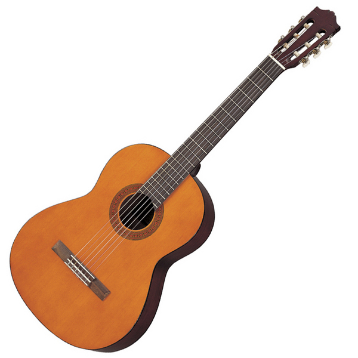
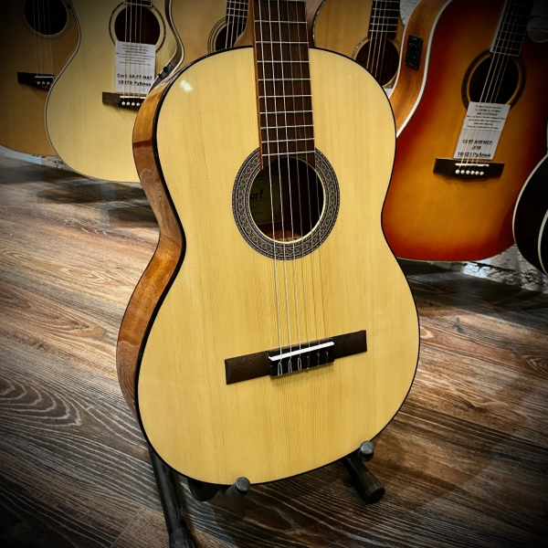
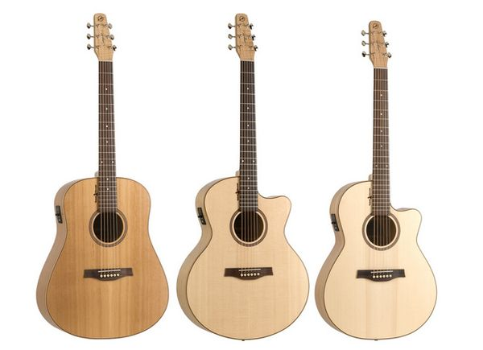
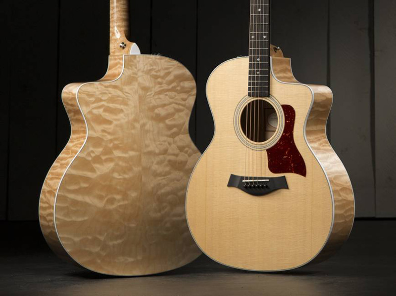
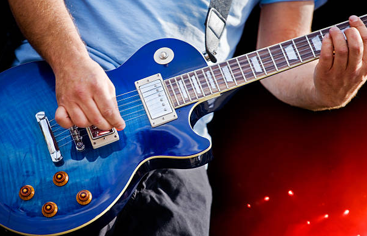
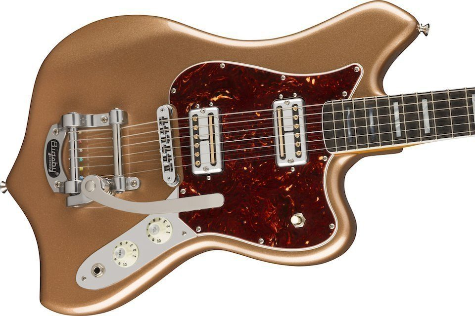

Гита́ра — струнный щипковый музыкальный инструмент. Применяется в качестве аккомпанирующего или сольного инструмента во многих стилях и направлениях музыки, среди которых романс, блюз, кантри, фламенко, рок, джаз. Изобретённая в XX веке электрическая гитара произвела значительные изменения в музыке и тем самым оказала сильное влияние на массовую культуру. Также есть классическая гитара.
Классификация
- По способу усиления звука: акустическая гитара, электрогитара, полуакустическая электрогитара, электроакустическая гитара и синтезаторная гитара
- По конструкции корпуса: классическая гитара, фолк, флэттоп, арктоп, дредноут, джамбо, цыганская джаз, добро, гитара-кроссовер.
- По диапазону: обычная, бас-, тенор- и баритон-гитара
- По числу струн: четырёхструнная, шести-, семи- и двенадцатиструнная.
Классическая гитара
Классическая (испанская, шестистру́нная) гита́ра — струнный щипковый музыкальный инструмент. Основной представитель семейства гитар в целом, и акустических гитар в частности. В современном виде существует со второй половины XVIII века, используется как сольный, ансамблевый и аккомпанирующий инструмент. Гитара обладает большими художественно-исполнительскими возможностями и широким разнообразием тембров.Классическая гитара имеет шесть струн, основной строй которых — E, A, d, g, b, e1 (ми большой октавы, ля, ре малой октавы, соль, си, ми первой октавы). Ряд музыкальных мастеров проводили эксперименты по добавлению дополнительных струн (десятиструнная гитара Фердинандо Карулли и Рене Лакота, пятнадцатиструнная гитара Василия Лебедева, девятиструнная, ГРАН-гитара и др.), однако такие инструменты широкого распространения не получили. Основными частями гитары являются корпус, гриф и 6 струн. Корпус имеет 4 поверхности: переднюю, заднюю и две боковых — левую и правую. Они называются соответственно верхняя дека, нижняя дека и обечайки.
Фолк-гитара
Фолк-гитара (Folk) — акустическая шестиструнная гитара, приспособленная к использованию металлических струн. Применяется ныне практически во всех музыкальных жанрах. Иметь у себя дома хотя бы одну фолк-гитару – необходимое условие нормального существования для музыканта будь ты хоть пианист, хоть барабанщик. Отцом современной фолк-акустики считается американец Христиан Фредерик Мартин (Christian Frederick Martin), который на рубеже девятнадцатого и двадцатого веков столкнулся с проблемой усиления звука обычной классической гитары — и решил эту проблему.Решение стало возможным благодаря изобретению стальных струн, в противовес ранее использовавшимся жильным. Натяжение таких струн было куда сильнее, что потребовало более габаритного корпуса и особенного Х-образного крепления пружин верхней деки — именно это новшество сделало американцу имя и принесло ему кучу денег.
Следует отметить также, что гриф у фолк-гитары существенно уже, чем у классической и снабжен внутри анкерным болтом (все для той же прочности и успешной борьбы с деформацией от натяжения струн). В результате на фолк-гитаре очень удобно играть медиатором разнообразные ритм-партии. Звук получается не только громким, но и очень четким и легко управляемым. На классике так не сыграть. Мартин назвал своё детище folk-guitar. Это определение существует до сих пор, хотя более употребляемыми в народе все-таки стали термины «вестерн» или «эстрадная гитара» — не иначе, в противовес камерной и консервативной классической гитаре. До сих пор компания Martin & Co производит едва ли не самые пафосные, дорогие и желанные инструменты.
Электрогитара
Электрогита́ра — струнно-щипковый электрический музыкальный инструмент, разновидность гитары, имеющая электромагнитные звукосниматели, преобразующие колебания металлических струн в колебания электрического тока. Сигнал со звукоснимателей может быть обработан для получения различных звуковых эффектов и усилен — для воспроизведения через акустическую систему. Слово «электрогитара» возникло от словосочетания «электрическая гитара». Электрогитары изготавливаются, как правило, из дерева. Самые распространённые материалы — ольха, ясень, махагони (красное дерево), клён. В качестве накладок на гриф применяют палисандр, чёрное дерево и клён. Наиболее распространены шестиструнные электрогитары. Классический строй шестиструнной гитары аналогичен строю акустической гитары: ми-ля-ре-соль-си-ми (E-A-D-G-B-E, от низких нот к высоким).
Достаточно часто используется строй «dropped D», в котором нижняя струна настраивается в ре (D) и более низкие настройки (Drop C, Drop B), которые используют в основном гитаристы, играющие в различных поджанрах экстремального металла. В семиструнных электрогитарах чаще всего дополнительная нижняя струна настраивается в си (B). Восьмиструнная гитара — электрогитара с дополнительными 7 и 8 струнами для расширения доступного звукового диапазона низких частот. Впервые сделана на заказ и использована шведской метал-группой «Meshuggah».Благодаря популярности этой группы для любителей подобной музыки выпущена первая серийная 8-струнная гитара, Ibanez 2228. Типичными, наиболее популярными и одними из старейших моделей электрогитар являются Telecaster (выпущена в 1951 году) и Stratocaster (1954) компании Fender, а также Les Paul (1952) компании Gibson. Эти гитары считаются эталонными и имеют множество копий и подражаний, которые производятся другими компаниями.
Многие современные крупные компании по производству музыкальных инструментов в начале своей деятельности выпускали лишь копии популярных моделей Fender и Gibson. Впрочем, впоследствии такие фирмы как Rickenbacker, Ibanez, MusicMan (англ.), Jackson, Yamaha, Hamer (англ.), B.C. Rich, ESP, Schecter и другие выпустили собственные модельные ряды инструментов, которые стали очень популярными в мире.